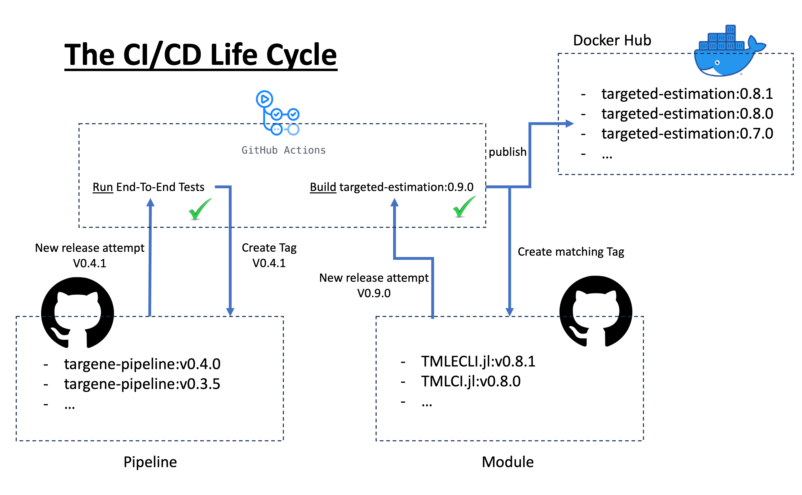

Contributing
Contributions, whether bug fixes, new features or documentation improvements are very welcome!
Raise an issue
In order to discuss and track the evolution of the project, please first raise an issue on the targene-pipeline repository. If a change is agreed upon, the discussion should identify the relevant repositories that are concerned by the change and open an issue on each of the repository. For instance, if one wishes to improve the extraction of traits from the UK-Biobank, the UKBMain.jl would surely be impacted and a new release for that package necessary.
Suggested Development Workflow
Following our previous UKBMain.jl example, there are two repositories that need to be updated, the current workflow is as follows:
- Develop
- UKBMain.jl
- Create a new git branch for your change
- Develop and test
- Release an image for your branch by selecting it after clicking the Run workflow button. If the tests pass, a new docker image will be generated and hosted on Docker hub with your branch's name (see Docker Images).
- targene-pipeline
- Create a new git branch for your change
- For each Nextflow process using the UKBMain.jl's docker image, update to the branch's image name.
- Develop further required changes and run/add the tests (see Workflows Tests).
- UKBMain.jl
- Review: When everything is working, ask for a review
- Release UKBMain.jl:
- Merge your branch into main
- Create a new Github release following semantic versioning, this will create a new docker image with your release name.
- Release TarGene
- For each Nextflow process using the UKBMain.jl's docker image, update to the released image name (as before).
- Create a new Github release following semantic versioning

Docker Images
Currently, all TarGene building blocks (executables) are provided as docker images. The following table provides a map linking each TarGene repository to the associated Docker image tags.
| Repository | Docker tag |
|---|---|
| TargeneCore.jl | tl-core |
| UKBMain.jl | ukbmain |
| TMLECLI.jl | targeted-estimation |
| Simulations.jl | targene-simulations |
Workflows Tests
The pipeline is automatically tested for every push/pull-request against a variety of tasks listed in the testrun section of the CI YAML file. To add a new test, you thus need to add a testrun in this section and a corresponding Julia file in the test folder.
In can also be useful to run the tests locally for debugging. This can be done if you have Nextflow, Julia and Singularity installed and requires a Linux machine. If you have instantiated the test project, a test can be fully run like so:
julia --project=test --startup-file=no test/TESTFILE -profile local -resumeAlternatively, within the Julia REPL you can manually run the code sequentially.
Working on the Documentation
The documentation is built and deployed using Documenter.jl. It only relies on Markdown files which can simply be edited.
However, it may be useful to see how your changes will be reflected within the documentation as you are working in real time. For that, you can use the following workflow (steps 1 and 2 are done only once):
- Install Julia
- From the Julia REPL, install in the main Julia environment the LiveServer package:
add LiveServer. - In the project directory (targene-pipeline) run:
julia --startup-file=no --project=docs -e'using LiveServer; servedocs()'
The documentation should be accessible in your browser at http://localhost:8000/.